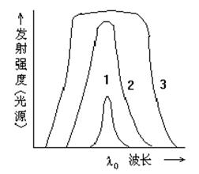
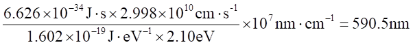
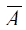
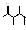

四、原子吸收光谱法（185题）
一、选择题 ( 共72题 131分 )
1. 1 分 (1001)
下列说法哪个是错误的？ ( )
(1) 荧光光谱的最短波长和激发光谱的最长波长相对应
(2) 最长的荧光波长与最长的激发光波长相对应
(3) 荧光光谱与激发光波长无关
(4) 荧光波长永远长于激发光波长
2. 2 分 (1002)
在原子吸收光谱分析中，若组分较复杂且被测组分含量较低时，为了简便准确地
进行分析，最好选择何种方法进行分析 ? ( )
(1) 工作曲线法 (2) 内标法
(3) 标准加入法 (4) 间接测定法
3. 2 分 (1006)
原子吸收测定时，调节燃烧器高度的目的是 ( )
(1) 控制燃烧速度 (2) 增加燃气和助燃气预混时间
(3) 提高试样雾化效率 (4) 选择合适的吸收区域
4. 2 分 (1008)
采用调制的空心阴极灯主要是为了 ( )
(1) 延长灯寿命 (2) 克服火焰中的干扰谱线
(3) 防止光源谱线变宽 (4) 扣除背景吸收
5. 2 分 (1012)
用有机溶剂萃取一元素，并直接进行原子吸收测定时，操作中应注意 ( )
(1) 回火现象 (2) 熄火问题
(3) 适当减少燃气量 (4) 加大助燃比中燃气量
6. 2 分 (1015)
在原子吸收分析中，如灯中有连续背景发射，宜采用 ( )
(1) 减小狭缝 (2) 用纯度较高的单元素灯
(3) 另选测定波长 (4) 用化学方法分离
7. 1 分 (1084)
为了消除火焰原子化器中待测元素的发射光谱干扰应采用下列哪种措施？( )
(1) 直流放大 (2) 交流放大
(3) 扣除背景 (4) 减小灯电流
8. 2 分 (1092)
下列哪种原子荧光是反斯托克斯荧光？ ( )
(1) 铬原子吸收 359.35nm，发射 357.87nm
(2) 铅原子吸收 283.31nm，发射 283.31nm
(3) 铅原子吸收 283.31nm，发射 405.78nm
(4) 铊原子吸收 377.55nm，发射 535.05nm
9. 2 分 (1093)
下列哪种原子荧光是反斯托克斯荧光？ ( )
(1) 铬原子吸收 359.35nm，发射 357.87nm
(2) 铅原子吸收 283.31nm，发射 283.31nm
(3) 铅原子吸收 283.31nm，发射 405.78nm
(4) 铊原子吸收 377.55nm，发射 535.05nm
10. 2 分 (1094)
下述哪种光谱法是基于发射原理？ ( )
(1) 红外光谱法 (2) 荧光光度法
(3) 分光光度法 (4) 核磁共振波谱法
11. 2 分 (1099)
由原子无规则的热运动所产生的谱线变宽称为： ( )
(1) 自然变度 (2) 斯塔克变宽
(3) 劳伦茨变宽 (4) 多普勒变宽
12. 2 分 (1100)
原子化器的主要作用是： ( )
(1) 将试样中待测元素转化为基态原子
(2) 将试样中待测元素转化为激发态原子
(3) 将试样中待测元素转化为中性分子
(4) 将试样中待测元素转化为离子
13. 2 分 (1102)
在原子吸收分光光度计中，目前常用的光源是 ( )
(1) 火焰 (2) 空心阴极灯
(3) 氙灯 (4) 交流电弧
14. 2 分 (1175)
质量浓度为0.1mg/mL 的 Mg在某原子吸收光谱仪上测定时，得吸光度为 0.178，
结果表明该元素在此条件下的 1% 吸收灵敏度为 ( )
(1) 0.0000783 (2) 0.562
(3) 0.00244 (4) 0.00783
15. 2 分 (1176)
已知原子吸收光谱计狭缝宽度为 0.5mm 时，狭缝的光谱通带为 1.3nm，所以该仪器
的单色器的倒线色散率为： ( )
(1) 每毫米 2.6nm (2) 每毫米 0.38nm
(3) 每毫米 26nm (4) 每毫米 3.8nm
16. 2 分 (1196)
某台原子吸收分光光度计，其线色散率为每纳米 1.0 mm，用它测定某种金属离
子，已知该离子的灵敏线为 403.3nm，附近还有一条 403.5nm 的谱线，为了不干扰该
金属离子的测定，仪器的狭缝宽度达： ( )
(1) < 0.5mm (2) < 0.2mm
(3) < 1mm (4) < 5mm
17. 2 分 (1197)
原子吸收光谱分析过程中，被测元素的相对原子质量愈小，温度愈高，则谱线的热变
宽将是 ( )
(1) 愈严重 (2) 愈不严重
(3) 基本不变 (4) 不变
18. 2 分 (1242)
空心阴极灯的主要操作参数是 ( )
(1) 灯电流 (2) 灯电压
(3) 阴极温度 (4) 内充气体的压力
19. 2 分 (1243)
在原子吸收分析法中, 被测定元素的灵敏度、准确度在很大程度上取决于( )
(1) 空心阴极灯 (2) 火焰
(3) 原子化系统 (4) 分光系统
20. 2 分 (1244)
若原子吸收的定量方法为标准加入法时, 消除了下列哪种干扰？ ( )
(1) 分子吸收 (2) 背景吸收
(3) 光散射 (4) 基体效应
21. 1 分 (1310)
与原子吸收法相比,原子荧光法使用的光源是 ( )
(1)必须与原子吸收法的光源相同 (2)一定需要锐线光源
(3)一定需要连续光源 (4)不一定需要锐线光源
22. 1 分 (1311)
在原子荧光法中, 多数情况下使用的是 ( )
(1)阶跃荧光 (2)直跃荧光
(3)敏化荧光 (4)共振荧光
23. 2 分 (1312)
在原子吸收分析中, 一般来说, 电热原子化法与火焰原子化法的检测极限( )
(1)两者相同 (2)不一定哪种方法低或高
(3)电热原子化法低 (4)电热原子化法高
24. 2 分 (1314)
在原子吸收分析中, 如怀疑存在化学干扰, 例如采取下列一些补救措施,
指出哪种措施是不适当的 ( )
(1)加入释放剂 (2)加入保护剂
(3)提高火焰温度 (4)改变光谱通带
25. 2 分 (1315)
在火焰原子吸收分析中, 分析灵敏度低, 研究发现是在火焰中有氧化物粒子形成, 于
是采取下面一些措施, 指出哪种措施是不适当的 ( )
(1)提高火焰温度 (2)加入保护剂
(3)改变助燃比使成为富燃火焰 (4)预先分离干扰物质
26. 2 分 (1316)
在原子吸收分析中, 已知由于火焰发射背景信号很高, 因而采取了下面一些措施,
指出哪种措施是不适当的 ( )
(1)减小光谱通带 (2)改变燃烧器高度
(3)加入有机试剂 (4)使用高功率的光源
27. 1 分 (1317)
在原子荧光分析中, 如果在火焰中生成难熔氧化物, 则荧光信号 ( )
(1)增强 (2)降低
(3)不变 (4)可能增强也可能降低
28. 2 分 (1318)
在原子吸收分析中, 下列哪种火焰组成的温度最高？ ( )
(1)空气-乙炔 (2)空气-煤气
(3)笑气-乙炔 (4)氧气-氢气
29. 2 分 (1319)
在原子吸收分析中, 当溶液的提升速度较低时, 一般在溶液中混入表面张力小、
密度小的有机溶剂, 其目的是 ( )
(1)使火焰容易燃烧 (2)提高雾化效率
(3)增加溶液粘度 (4)增加溶液提升量
30. 1 分 (1320)
在原子荧光分析中, 可以使用几种类型的激发光源,指出下列哪种光源可能使方法
的检出限最低? ( )
(1)氙灯 (2)金属蒸气灯
(3)空心阴极灯 (4)激光光源
31. 2 分 (1321)
在原子吸收分析中, 过大的灯电流除了产生光谱干扰外, 还使发射共振线的谱线
轮廓变宽. 这种变宽属于 ( )
(1)自然变宽 (2)压力变宽
(3)场致变宽 (4)多普勒变宽(热变宽)
32. 2 分 (1322)
原子吸收和原子荧光分析的光谱干扰比火焰发射分析法的光谱干扰 ( )
(1)多 (2)相当
(3)不能确定谁多谁少 (4)少
33. 2 分 (1323)
原子吸收分析中, 有时浓度范围合适, 光源发射线强度也很高, 测量噪音也小,
但测得的校正曲线却向浓度轴弯曲, 除了其它因素外, 下列哪种情况最有可能是直接
原因? ( )
(1)使用的是贫燃火焰 (2)溶液流速太大
(3)共振线附近有非吸收线发射 (4)试样中有干扰
34. 2 分 (1325)
在电热原子吸收分析中, 多利用氘灯或塞曼效应进行背景扣除, 扣除的背景主要
是 ( )
(1)原子化器中分子对共振线的吸收
(2)原子化器中干扰原子对共振线的吸收
(3)空心阴极灯发出的非吸收线的辐射
(4)火焰发射干扰
35. 2 分 (1326)
在原子吸收分析中, 由于某元素含量太高, 已进行了适当的稀释, 但由于浓度高,
测量结果仍偏离校正曲线, 要改变这种情况, 下列哪种方法可能是最有效的？( )
(1)将分析线改用非共振线 (2)继续稀释到能测量为止
(3)改变标准系列浓度 (4)缩小读数标尺
36. 1 分 (1328)
原子荧光法与原子吸收法受温度的影响比火焰发射小得多, 因此原子荧光分析要
克服的主要困难是 ( )
(1)光源的影响 (2)检测器灵敏度低
(3)发射光的影响 (4)单色器的分辨率低
37. 2 分 (1329)
在原子吸收分析的理论中, 用峰值吸收代替积分吸收的基本条件之一是( )
(1)光源发射线的半宽度要比吸收线的半宽度小得多
(2)光源发射线的半宽度要与吸收线的半宽度相当
(3)吸收线的半宽度要比光源发射线的半宽度小得多
(4)单色器能分辨出发射谱线, 即单色器必须有很高的分辨率
38. 1 分 (1330)
指出下列哪种说法有错误? ( )
(1)原子荧光法中, 共振荧光发射的波长与光源的激发波长相同
(2)与分子荧光法一样, 原子共振荧光发射波长比光源的激发波长长
(3)原子荧光法中, 荧光光谱较简单, 不需要高分辨率的分光计
(4)与分子荧光法一样, 原子荧光强度在低浓度范围内与荧光物质浓度成正比
39. 2 分 (1331)
在原子吸收分析中, 有两份含某元素M 的浓度相同的溶液1 和溶液2 , 在下列哪
种情况下, 两份溶液的吸光度一样？ ( )
(1)溶液2的粘度比溶液1大
(2)除M外溶液2中还含表面活性剂
(3)除M外溶液2中还含10mg/mL KCl
(4)除M外溶液2中还含1mol/L NaCl溶液
40. 2 分 (1332)
在原子吸收分析中, 通常分析线是共振线, 因为一般共振线灵敏度高, 如Hg的共
振线185.0 nm比Hg的共振线253.7 nm的灵敏度大50倍, 但实际在测汞时总是使用253.7nm
作分析线, 其原因是 ( )
(1)汞蒸气有毒不能使用185.0nm
(2)汞蒸气浓度太大不必使用灵敏度高的共振线
(3)Hg185.0 nm线被大气和火焰气体强烈吸收
(4)汞空心阴极灯发射的185.0 nm线的强度太弱
41. 2 分 (1337)
原子吸收光谱是 ( )
(1)分子的振动、转动能级跃迁时对光的选择吸收产生的
(2)基态原子吸收了特征辐射跃迁到激发态后又回到基态时所产生的
(3)分子的电子吸收特征辐射后跃迁到激发态所产生的
(4)基态原子吸收特征辐射后跃迁到激发态所产生的
42. 2 分 (1347)
欲分析165～360nm的波谱区的原子吸收光谱, 应选用的光源为 ( )
(1)钨灯 (2)能斯特灯
(3)空心阴极灯 (4)氘灯
43. 2 分 (1348)
原子吸收光谱仪与原子发射光谱仪在结构上的不同之处是 ( )
(1)透镜 (2)单色器
(3)光电倍增管 (4)原子化器
44. 2 分 (1351)
原子吸收分析对光源进行调制, 主要是为了消除 ( )
(1)光源透射光的干扰 (2)原子化器火焰的干扰
(3)背景干扰 (4)物理干扰
45. 1 分 (1353)
荧光分析是基于测量 ( )
(1)辐射的吸收 (2)辐射的发射
(3)辐射的散射 (4)辐射的折射
46. 2 分 (1354)
在原子吸收分析中, 采用标准加入法可以消除 ( )
(1)基体效应的影响 (2)光谱背景的影响
(3)其它谱线的干扰 (4)电离效应
47. 2 分 (1356)
影响原子吸收线宽度的最主要因素是 ( )
(1)自然宽度 (2)赫鲁兹马克变宽
(3)斯塔克变宽 (4)多普勒变宽
48. 2 分 (1358)
在原子吸收法中, 原子化器的分子吸收属于 ( )
(1)光谱线重叠的干扰 (2)化学干扰
(3)背景干扰 (4)物理干扰
49. 1 分 (1360)
为了消除火焰原子化器中待测元素的发光干扰, 应采取的措施是 ( )
(1)直流放大 (2)交流放大
(3)扣除背景 (4)数字显示
50. 1 分 (1361)
用于测量荧光辐射的检测器是 ( )
(1)光电池 (2)热导池
(3)热电偶 (4)光电倍增管
51. 2 分 (1362)
原子吸收法测定钙时, 加入EDTA是为了消除下述哪种物质的干扰? ( )
(1)盐酸 (2)磷酸
(3)钠 (4)镁
52. 2 分 (1363)
可以消除原子吸收法中的物理干扰的方法是 ( )
(1)加入释放剂 (2)加入保护剂
(3)扣除背景 (4)采用标准加入法
53. 2 分 (1364)
空心阴极灯中对发射线半宽度影响最大的因素是 ( )
(1)阴极材料 (2)阳极材料
(3)内充气体 (4)灯电流
54. 2 分 (1366)
下述情况下最好选用原子吸收法而不选用原子发射光谱法测定的是 ( )
(1)合金钢中的钒 (2)矿石中的微量铌
(3)血清中的钠 (4)高纯氧化钇中的稀土元素
55. 2 分 (1369)
在原子吸收法中, 能够导致谱线峰值产生位移和轮廓不对称的变宽应是( )
(1)热变宽 (2)压力变宽
(3)自吸变宽 (4)场致变宽
56. 2 分 (1370)
原子吸收法测定易形成难离解氧化物的元素铝时, 需采用的火焰为 ( )
(1)乙炔-空气 (2)乙炔-笑气
(3)氧气-空气 (4)氧气-氩气
57. 2 分 (1373)
原子吸收线的劳伦茨变宽是基于 ( )
(1)原子的热运动
(2)原子与其它种类气体粒子的碰撞
(3)原子与同类气体粒子的碰撞
(4)外部电场对原子的影响
58. 2 分 (1375)
可以说明原子荧光光谱与原子发射光谱在产生原理上具有共同点的是 ( )
(1)辐射能使气态基态原子外层电子产生跃迁
(2)辐射能使原子内层电子产生跃迁
(3)能量使气态原子外层电子产生发射光谱
(4)电、 热能使气态原子外层电子产生发射光谱
59. 2 分 (1376)
可以概述原子吸收光谱和原子荧光光谱在产生原理上的共同点是 ( )
(1)辐射能与气态基态原子外层电子的相互作用
(2)辐射能与气态原子外层电子产生的辐射
(3)辐射能与原子内层电子产生的跃迁
(4)电、 热能使气态原子外层电子产生的跃迁
60. 2 分 (1379)
下列原子荧光中属于反斯托克斯荧光的是 ( )
(1)铬原子吸收359.35nm, 发射357.87nm
(2)铅原子吸收283.31nm, 发射283.31nm
(3)铟原子吸收377.55nm, 发射535.05nm
(4)钠原子吸收330.30nm, 发射589.00nm
61. 1 分 (1380)
原子荧光的量子效率是指 ( )
(1)激发态原子数与基态原子数之比
(2)入射总光强与吸收后的光强之比
(3)单位时间发射的光子数与单位时间吸收激发光的光子数之比
(4)原子化器中离子浓度与原子浓度之比
62. 2 分 (1740)
原子吸收光谱法测定试样中的钾元素含量,通常需加入适量的钠盐, 这里钠盐被称为 ( )
(1) 释放剂 (2) 缓冲剂
(3) 消电离剂 (4) 保护剂
63. 2 分 (1741)
空心阴极灯内充的气体是 ( )
(1) 大量的空气 (2) 大量的氖或氩等惰性气体
(2) 少量的空气 (4) 少量的氖或氩等惰性气体
64. 2 分 (1742)
非色散型原子荧光光谱仪、原子发射光电直读光谱仪和原子吸收分光光度计的相同部件是 ( )
(1) 光源 (2) 单色器
(3) 原子化器 (4) 检测器
65. 2 分 (1743)
可以概述三种原子光谱(吸收、发射、荧光)产生机理的是 ( )
(1) 能量使气态原子外层电子产生发射光谱
(2) 辐射能使气态基态原子外层电子产生跃迁
(3) 能量与气态原子外层电子相互作用
(4) 辐射能使原子内层电子产生跃迁
66. 2 分 (1744)
双光束原子吸收分光光度计不能消除的不稳定影响因素是 ( )
(1) 光源 (2) 原子化器
(3) 检测器 (4) 放大器
67. 2 分 (1745)
在以下说法中, 正确的是 ( )
(1) 原子荧光分析法是测量受激基态分子而产生原子荧光的方法
(2) 原子荧光分析属于光激发
(3) 原子荧光分析属于热激发
(4) 原子荧光分析属于高能粒子互相碰撞而获得能量被激发
68. 1 分 (1746)
在石墨炉原子化器中, 应采用下列哪种气体作为保护气？ ( )
(1) 乙炔 (2) 氧化亚氮
(3) 氢 (4) 氩
69. 2 分 (1747)
在火焰原子吸收光谱法中, 测定下述哪种元素需采用乙炔--氧化亚氮火焰( )
(1) 钠 (2) 钽
(3) 钾 (4) 镁
70. 2 分 (1748)
在原子吸收光谱法中, 火焰原子化器与石墨炉原子化器相比较,应该是( )
(1) 灵敏度要高, 检出限却低
(2) 灵敏度要高, 检出限也低
(3) 灵敏度要低, 检出限却高
(4) 灵敏度要低, 检出限也低
71. 2 分 (1749)
在原子吸收光谱法分析中, 能使吸光度值增加而产生正误差的干扰因素是( )
(1) 物理干扰 (2) 化学干扰
(3) 电离干扰 (4) 背景干扰
72. 2 分 (1750)
原子吸收分光光度计中常用的检测器是 ( )
(1) 光电池 (2) 光电管
(3) 光电倍增管 (4) 感光板
二、填空题 ( 共59题 )
1. 2 分 (2018)
在原子吸收分析中，为了定量的描述谱线的轮廓，习惯上引入了两个物理量，即
________ 和 ________ 。
2. 5 分 (2020)
影响谱线半宽度的诸因素中，对于温度在 1000～3000K, 外界气体压力约为
101325Pa 时，吸收线轮廓主要受 __________________ 和 _________________ 变宽
的影响。其变宽的数量级为 _________ 。
3. 5 分 (2021)
火焰原子吸收法与分光光度法，其共同点都是利用 ______ 原理进行分析的方
法，但二者有本质区别，前者是 _________ ，后者是 _________ ，所用的光源，前
者是 _________，后者是 _________ 。
4. 2 分 (2022)
荧光分析法不是测定 _________ 光的强弱，而是测定 ________ 光的强弱。
5. 5 分 (2025)
用火焰原子化法进行原子吸收光谱分析时，为了防止“回火”，火焰的点燃和熄
灭时开启有关气体的顺序：点燃时 ________________________________
熄灭时 ________________________________ 。
6. 5 分 (2026)
原子吸收法测定钙时，为了抑制 PO43-的干扰，常加入的释放剂为 _______ ；测定
镁时，为了抑制 Al3+的干扰，常加入的释放剂为 ______ ；测定钙和镁时，为了抑制
Al3+的干扰，常加入保护剂 ________ 或 ________ 。
7. 5 分 (2027)
在原子吸收分析中，为了要消除喷雾系统和火焰系统带来的干扰，宜采用 ______
法进行定量。若被测元素灵敏度太低，或者共振吸收在真空紫外区，则宜采用 ________
法进行定量。为了消除基体效应的干扰，宜采用 ________________法进行定量。
8. 2 分 (2046)
朗伯-比尔定律的积分表达式是：lg (I0/I) = ebc，在实际测定工作中，
I0 是 ________________________ ，I 是 ____________________________ 。
9. 5 分 (2047)
荧光是光致发光现象。荧光分光光度计是在与入射光束成直角的方向测定荧光，
这是为了____________________ 。荧光分光光度计通常备有两个单色器，其中一个是
________ 单色器，其作用是 _______________________ ，另一个是 ______ 单色器，
其作用是 _____________ 。
10. 2 分 (2052)
原子吸收分光光度计的氘灯背景校正器，可以扣除背景的影响，提高分析测定的
灵敏度，其原因是 ______________________________________________________ 。
11. 2 分 (2069)
当使用同样大小的工作电流时，不同元素的空心阴极灯其谱线的多谱勒变宽情况
应是 ________ 。
12. 2 分 (2081)
富燃焰适用于一些在火焰中易形成_____________ 的元素的原子吸收测定.
13. 2 分 (2109)
原子吸收光谱分析法的灵敏度是指得到_____________________时水溶液中元素的
浓度.
14. 5 分 (2300)
原子吸收分析法其独有的分析特点是:
(1)________________________________
(2)________________________________
(3)________________________________
(4)________________________________
15. 5 分 (2301)
在原子荧光分析法中, 多数情况下使用的是______________________荧光, 它是
由于________________________________________________________________产生的,
使用多的原因是由于________________________________________________________
___________________________________________________________________。
16. 5 分 (2302)
电热原子化法的具体做法是 _____________________________________________
__________________________________________________________。该方法的特点是
______________________________________, ___________________________________,
______________________________________, ___________________________________。
17. 5 分 (2303)
在原子吸收分析中, 由于分子吸收, 光散射作用及基体效应等会造成背景影响,
可用的扣除背景的方法有:_________________________________________,
_________________________________________,
_________________________________________,
_________________________________________.
18. 5 分 (2304)
在原子吸收光谱分析中, 除了试样的化学处理外, 在仪器测量方面, 为了得到最好
的实验结果, 应该选择好的实验条件, 主要包括:
_______________________________________
_______________________________________
______________________________________
_______________________________________
________________________________________
19. 5 分 (2305)
原子吸收分析中主要的干扰类型有
_______________________________________
_______________________________________
_______________________________________
______________________________________
20. 5 分 (2306)
在原子吸收分析中, 试液进入火焰后开始了一个复杂的原子化过程. 这个过程包
括:_______________________________________
_______________________________________
_______________________________________
_______________________________________
_______________________________________等
21. 5 分 (2307)
在原子吸收光谱分析中, 火焰按燃料气和助燃气种类划分有( 举四种 )
_______________________________________
_______________________________________
_______________________________________
_______________________________________
22. 5 分 (2309)
在原子吸收光谱中, 谱线变宽的基本因素是
(1)_______________________________________
(2)_______________________________________
(3)_______________________________________
(4)_______________________________________
(5)_______________________________________
23. 5 分 (2308)
在原子吸收光谱中, 谱线的峰值吸收是指_____________________________________
谱线的半宽度指_____________________________________
积分吸收定义为_______________________________________
24. 5 分 (2329)
在原子吸收法中, _____________________的火焰称之为富燃火焰,_________________
的火焰称之为贫燃火焰。其中, _________火焰具有较强的还原性, _____________火焰具有
较强的氧化性。
25. 5 分 (2330)
原子吸收分光光度计带有氘灯校正装置时, 由于空心阴极灯发射________辐射,
因此_________ 吸收和__________吸收均不能忽略; 而氘灯则是发射________光谱,
所以_________吸收可以忽略。
26. 2 分 (2331)
预混合型燃烧器的层流火焰通常可大致分为_____个区域, 其中 _______________
区是原子吸收的主要观测区。
27. 2 分 (2332)
在原子吸收定量分析中, 外推法与计算法相比较, 前者的优点是_______________
而后者的优点则是___________________________________。
28. 5 分 (2333)
双光束原子吸收分光光度计由于两光束是由_______ 光源发出, 并且使用________
器, 因此可消除_____________的影响, 但不能消除 _________________________
的影响。
29. 2 分 (2334)
在原子吸收法中常加入消电离剂以克服_____________。一般, 消电离剂的电离
电位越__________则效果越好。
30. 2 分 (2335)
在原子吸收光谱法中, 若有干扰元素共振吸收线的重叠, 将导致测定结果偏
________。遇此情况, 可用______________________或______________________
的方法来解决。
31. 2 分 (2336)
原子吸收法测量时, 要求发射线与吸收线的 _____________________一致,
且发射线与吸收线相比, ____________________要窄得多. 产生这种发射线的光源,
通常是 ______________________________。
32. 2 分 (2337)
在原子荧光分析中主要是利用__________荧光, 其荧光波长___________激发光波长。
33. 2 分 (2338)
在原子吸收法中, 由于吸收线半宽度很窄, 因此测量_______________ 有困难,
所以用测量_________________来代替.
34. 2 分 (2339)
一种物质的荧光光谱和其吸收光谱, 大致呈镜像对称关系, 但通常前者相对于后
者向_______波方向移动. 这是因为物质在吸收一定能量的光辐射后,存在___________。
35. 2 分 (2344)
在石墨炉原子化器中, 试液首先在其中低温_____________, 然后升温__________,
最后生成_____________________。
36. 2 分 (2345)
空心阴极灯的阳极一般是 ____________, 而阴极材料则是__________________,
管内通常充有 _________________。
37. 2 分 (2347)
在原子吸收法中, 提高空心阴极灯的灯电流可增加___________________________,
但若灯电流过大, 则_____________________________随之增大, 同时会使发射线
_____________________________。
38. 2 分 (2350)
在原子吸收法中, 火焰原子化器与无火焰原子化器相比较, 测定的灵敏度________,
这主要是因为后者比前者的原子化效率______________________。
39. 2 分 (2351)
谱线峰值吸收系数K°= 2b／Dn∫Kdl, 式中, ∫Kdl称为________________,
Dn则为______________________。原子吸收定量分析时,为了提高测定的灵敏度,
可创造条件使_____________________________减小。
40. 2 分 (2471)
原子吸收分析常用的火焰原子化器是由�覃覃覃�、�覃覃覃覃覃�和�覃覃覃覃�组成的.
41. 2 分 (2472)
空心阴极灯内充气的作用是�覃覃覃覃覃覃覃覃覃覃覃覃覃覃覃覃�.
42. 5 分 (2610)
火焰原子吸收光谱分析中, 化学干扰与__________________________________
___________________________等因素有关, 它是一个复杂的过程, 可以采用
____________________________________________________等方法加以抑制。
43. 2 分 (2611)
原子吸收分光光度计中, 原子化器的主要作用是_____________________________。
44. 2 分 (2612)
原子吸收光谱法对光源的要求是___________________________________________
_________________________________, 符合这种要求的光源目前有_____________
_____________________________________。
45. 2 分 (2613)
原子吸收光谱法测定背景干扰包括__________________和__________________
两部分, 石墨炉原子化器比火焰原子化器的背景干扰________________________ 。
46. 2 分 (2614)
在原子吸收光谱分析过程中, 被测元素的原子质量愈小, 温度愈高, 谱线的热变宽
将__________________。
47. 2 分 (2615)
原子吸收法测Ca时, 为了消除磷酸根的干扰, 可以加入_______________________。
48. 2 分 (2616)
原子吸收分光光度计与原子发射光谱仪在结构上主要的相同之处是_____________。
49. 5 分 (2617)
火焰原子吸收光谱法测定中的电离干扰与_____________________________________
__________________________________________有关, 元素的电离度随火焰原子化
器的温度升高而____________, 随__________________________ 增大而减小。
50. 5 分 (2618)
火焰原子吸收光谱分析中, 必需选择的测定参数有 ___________、 __________、
_________、 ___________、 、 ______________和_________。
51. 2 分 (2619)
火焰原子吸收光谱法测定时, 调节燃烧器高度的目的是 ____________________。
52. 2 分 (2620)
阶跃线荧光和直跃线荧光又称为___________________荧光, 其特点是荧光波长_____
激发光波长。
53. 2 分 (2641)
在火焰原子吸收分光光度法中,
化学计量火焰的特点是_________________________________________________,
富燃火焰的特点是_____________________________________________________,
贫燃火焰的特点是_____________________________________________________。
54. 2 分 (2642)
原子吸收线的宽度主要受_____________________________________因素的影响。
55. 2 分 (4508)
在原子吸收光谱法中, 选用灯电流原则为___________________________________
________________________.
56. 2 分 (4509)
单道单光束火焰原子吸收分光光度计主要有四大部件组成, 它们依次为_________
______、 _____________、________________和____________________.
57. 2 分 (4510)
用原子吸收光谱法测定时, 火焰中的固体微粒会对光源发出的辐射产生_________
现象, 因而使吸光度_____________________.
58. 2 分 (4511)
在原子吸收光谱法中, 要使吸光度与原子蒸气中待测元素的基态原子数之间的关
系遵循朗伯-比耳定律, 必须使发射线宽度_____________________________.
59. 2 分 (4512)
通常, 在原子吸收光谱法中, 空心阴极灯的工作电流增大, 反而使灵敏度变低,
其原因是_______________________________________________________.
三、计算题 ( 共21题 )
1. 5 分 (3064)
如果钠原子的共振激发能为 2.10eV，试计算其共振线的波长。
2. 5 分 (3080)
波长为 588.9nm 的谱线其激发电位应为多少电子伏特？
3. 5 分 (3081)
Cu 324.75nm[Ar(Cu)= 63.54]在 3000 K 火焰中其多普勒变宽应为多少纳米？
4. 10 分 (3083)
在原子吸收光谱分析中，Zn 的共振线为 ZnI 213.9nm，已知gl/g0= 3，试计算处于 3000 K 的热平衡状态下，激发态锌原子和基态锌原子数之比。
5. 5 分 (3093)
测定水样中 Mg 的含量，移取水样 20.00mL 置于 50mL 容量瓶中，加入 HCl溶液酸化后，稀至刻度，选择原子吸收光谱法最佳条件, 测得其吸光度为 0.200，若另取20.00mL 水样于 50mL 容量瓶中，再加入含 Mg为 2.00μg/mL 的标准溶液 1.00mL并用 HCl溶液酸化后，稀至刻度。在同样条件下，测得吸光度为 0.225，试求水样中含镁量 (mg/L)。
6. 5 分 (3103)
用原子吸收法测定某溶液中 Cd 的含量时，得吸光度为 0.141。在 50mL 这种试液中加入 1mL 浓度为1.00×10-3mol/L的Cd标准溶液后，测得吸光度为 0.235，而在同样条件下，测得蒸馏水的吸光度为 0.010，试求未知液中 Cd 的含量和该原子吸收光度计的灵敏度（即 1％吸光度时的浓度）。
7. 5 分 (3300)
12×10-6mol/L的铅溶液给出30%吸收的原子吸收信号, 问此原子吸收的灵敏度是多大?
8. 10 分 (3302)
镁的 2852.13 共振线即为31S0-31P1跃迁的结果, 计算在2227℃火焰中激发态原子数Ni和基态原子数N0的比值.
共振线即为31S0-31P1跃迁的结果, 计算在2227℃火焰中激发态原子数Ni和基态原子数N0的比值.
(光速c＝2.998×1010cm/s,h＝6.626×10-34J・ｓ,k＝1.3806×10-23 J・K-1)
9. 10 分 (3303)
一台原子吸收光谱仪单色器的色散率( 倒线色散率 )是1.5nm/mm,若出射狭缝宽度为20mm, 问理论光谱通带是多少?波长407.10nm和401.60nm两条谱线在记录图上的距离是10mm,半宽度是7mm, 问单色器的实际通带是多少?
10. 5 分 (3304)
用原子吸收法测定元素M , 试样的吸收值读数为0.435, 现于9 份试样溶液中加入1份100×10-6mol/L的标准溶液,测得吸收值为0.835,计算试样溶液中M的浓度是多少?
11. 10 分 (3309)
用MgO的水溶液测量一台原子吸收分光光度计的检出限, 仪器的吸光度标尺扩展10倍,测得的纯蒸馏水及用蒸馏水配制含0.01mg/L MgO水溶液的吸光度值如下。计算MgO溶液的检出限。
┌─┬───────────────────────────────────
│ │测定次数 1 2 3 4 5 6 7 8 9 10
├─┼───────────────────────────────────
│吸│纯蒸馏水0.001 0.002 -0.001 0.000 0.003 -0.002 -0.003 0.002 0.002 0.000
│收├───────────────────────────────────
│值│镁溶液 0.101 0.102 0.100 0.103 0.101 0.101 0.102 0.098 0.100 0.100
└─┴───────────────────────────────────
12. 5 分 (3316)
平行称取两份0.500g金矿试样, 经适当溶解后, 向其中的一份试样加入1mL浓度为5.00mg/mL的金标准溶液, 然后向每份试样都加入5.00mL氢溴酸溶液, 并加入5mL甲基异丁酮, 由于金与溴离子形成络合物而被萃取到有机相中。用原子吸收法分别测得吸光度为0.37和0.22。求试样中金的含量(mg/g)。
13. 5 分 (3338)
火焰原子吸收法测Zn(相对原子质量为65.38)时, 火焰温度为2600K, 单色器的倒线色散率为2nm/mm, 出、入射狭缝宽度一致:0.1mm。试计算:
(1)单色器通带
(2)共振线Zn 218.856nm的多普勒半宽度(nm)
14. 5 分 (3502)
钠原子核外电子的3p和3s轨道的能级差为2.017eV，计算当3s电子被激发到3p轨道时，所吸收的电磁辐射的波长（nm）。（已知1eV=1.60×10－19J, h=6.63×10－34J・s, c=3.00×1010cm・s-1）。
15. 5 分 (3503)
原子吸收法测定某试液中某离子浓度时，测得试液的吸光度为0.218，取1.00mL浓度为10.0mg/mL的该离子的标准溶液加入到9.00mL试液中，在相同条件下测得吸光度为0.418，求该试液中该离子的质量浓度（以mg/L表示）。
16. 5 分 (3504)
用原子吸收光谱法分析试样中的Tl，使用丙烷－氧气火焰，其温度为2800K，吸收线为377.6nm，它是由6p1－7s1跃迁产生的，试问火焰中Tl原子的激发态和基态数之比为多少？(已知: k=1.38×10-23J・K-1， h=6.63×10－34J・s )
17. 5 分 (3505)
在3000K时，Zn的41S0－41P1跃迁的共振线波长为213.9nm。试计算其激发态和基态原子数之比。（已知普朗克常数h=6.63×10－34J・s，玻兹曼常数k＝1.38×10－23J・K－1）
18. 5 分 (3506)
已知光栅单色器的倒线色散率为2nm/mm，欲测Co240.73nm的吸收值，为防止 Co240.63nm干扰，应选择狭缝宽度为多少？
19. 5 分 (3524)
当用火焰原子吸收测定浓度为10mg /mL的某元素的标准溶液时，光强减弱了20％，若 在同样条件下测定浓度为50mg /mL的溶液时，光强将减弱多少？
20. 5 分 (3525)
用原子吸收光谱法测定试液中的Pb，准确移取50mL试液2份，用铅空心阴极灯在波长 283.3nm处，测得一份试液的吸光度为0.325，在另一份试液中加入浓度为50.0mg/L铅标准溶液300mL ，测得吸光度为0.670。计算试液中铅的质量浓度（g/L）为多少？
21. 5 分 (4517)
请比较紫外-可见分光光度法和原子吸收分光光度法中的单色器位置的差别, 并说明原因.
四、问答题 ( 共 33题 )
1. 5 分 (2049)
原子吸收、紫外-可见 及红外光谱仪都可以采用单道单光束光学系统，此话对吗？为什么？
2. 5 分 (2057)
原子吸收、紫外-可见及红外光谱仪都由光源、单色器、吸收池和检测系统等部件组成，但部件放置的位置是不同的，这是为什么？
3. 5 分 (3313)
现有A,B,C三种型号的原子吸收分光光度计, 其对应的技术指标如下表所示。若仅从色散率方面考虑, 哪一种仪器单色器性能较好? 为什么?
仪器型号 光谱通带/nm 狭缝宽度/mm
A 0.10 0.050
B 0.21 0.10
C 0.19 0.10
4. 10 分 (4001)
原子吸收分析中会遇到哪些干扰因素？简要说明各用什么措施可抑制上述干扰？
5. 5 分 (4010)
以下几条 Mg、Zn 和 Hg 的谱线中各应选择哪一条谱线(在310型原子吸收分光光度计上, 工作波长范围从200.0nm开始)以测定微量 Mg、Zn 和 Hg？请说明选择的根据。
Mg 285.2nm 31S0 - 31P1 Zn 213.86nm 41S0 - 41P1
Mg 457.1nm 31S0 - 33P1 Zn 307.59nm 41S0 - 43P1
Mg 382.9nm 33S0 - 33D1 Zn 328.23nm 43S0 - 43D1
Hg 184.96nm 61S0 - 61P1
Hg 253.65nm 61S0 - 63P1
Hg 365.01nm 63P0 - 63D1
6. 5 分 (4022)
对原子吸收分光光度计的光源为什么要进行调制？调制的方法有哪几种？
7. 5 分 (4032)
原子荧光光度计与原子吸收光度计的主要区别是什么？
8. 5 分 (4033)
非火焰原子吸收光谱法的主要优点是什么？
9. 5 分 (4034)
原子吸收光谱是怎样产生的？
10. 5 分 (4038)
火焰原子吸收光谱法中，应对哪些操作条件进行选择？为什么？
11. 5 分 (4039)
原子吸收光谱法中应选用什么光源？为什么？
12. 10 分 (4068)
指出下列说法有无错误，若有错误请加以改正：
(1) 光栅的面积愈大，分辨率愈大；
(2) 对于同一级光谱，光栅的分辨率随波长而变；
(3) 调节狭缝宽度目的是要获得一定的色散率；
(4) 相邻两条谱线被分辨的情况与所用通带有关系，通带增大，分辨率降低；
(5) 增大空心阴极灯的灯电流使发射强度增大，吸收灵敏度也增大；
(6) 原子吸收测量时，采用调制光源可消除荧光干扰。
13. 5 分 (4128)
火焰原子化法测定某物质中的 Ca 时，
(1) 选择什么火焰？
(2) 为了防止电离干扰采取什么办法？
(3) 为了消除 PO43-的干扰采取什么办法？
14. 5 分 (4130)
原子吸收分光光度法为什么是基于对共振线的吸收？
15. 5 分 (4133)
请简要说明试样在火焰原子化器中原子化的历程。并说明在火焰中影响原子化效率的因素是什么？
16. 5 分 (4135)
图中描述了三组操作条件下光源的辐射输出。试阐述当光源输出从 1 变到 2和 3 时，对在 l0处测量原子吸收和原子荧光的影响。（如图）

17. 5 分 (4144)
原子吸收分光光度计和紫外可见分子吸收分光光度计在仪器装置上有哪些异同点?
为什么?
18. 5 分 (4145)
原子吸收的背景有哪几种方法可以校正。
19. 5 分 (4146)
原子吸收是如何进行测量的？为什么要使用锐线光源？
20. 5 分 (4152)
试解释下列名词:
(1) 谱线半宽度
(2) 记忆效应
(3) 光谱通带
(4) 基体效应
21. 5 分 (4300)
在原子吸收分析中, 为了抑制凝聚相化学干扰, 通常加入释放剂。问释放剂的作
用是什么?
22. 5 分 (4301)
在原子吸收分析中, 为了抑制凝聚相化学干扰, 有时加入保护剂。问什么样的试
剂是保护剂?
23. 5 分 (4302)
在原子吸收分析中为什么常选择共振线作吸收线?
24. 5 分 (4303)
用火焰原子吸收法测定钠时，存在着电离干扰的影响，问加入哪类元素可以抑制钠电离
干扰的影响？
25. 5 分 (4304)
在原子吸收分析中为什么必须使用锐线光源?
26. 5 分 (4308)
在原子吸收分析中, 火焰按燃料气与助然气的比值可分为几类? 其特点各是什么?
27. 5 分 (4311)
在原子吸收分析中, 由于积分吸收在实际测量中存在着困难, 因此提出了用峰值
吸收代替积分吸收, 从而使原子吸收分析中吸光度A与浓度的关系也为A=K'c, 回答
出该式的基本前提是什么?
28. 5 分 (4313)
光学光谱以其外形可分为线光谱、 带光谱和连续光谱, 试问可见吸收光谱法和原
子吸收光谱法各利用何种形式的光谱进行测定?
29. 10 分 (4377)
要测量质量分数为0.5％~2％的钠, 可用锌空心阴极灯发射的非共振线 Zn330.259nm
和 Zn 330.294nm来测定。这时的分析灵敏度只有用钠灯发射的第二共振线 Na330.232nm
和 Na330.294nm的1／50, 而锌线的亮度是钠线亮度的1／2。待测试样中的锌对测定Na
并无干扰。试解释(1)锌线的亮度为什么是钠线亮度的1／2, 为什么用锌线测定钠时的分析
灵敏度只有用钠线时的1／50? (2)锌为什么对测定无干扰?
30. 10 分 (4378)
简述原子吸收分析中利用塞曼效应扣除背景干扰的原理。(以吸收线调制法为例)
31. 5 分 (4604)
为何原子吸收分光光度计的石墨炉原子化器较火焰原子化器有更高的灵敏度?
32. 5 分 (4605)
简述原子吸收分光光度计如何消除火焰原子发射光谱的干扰。
33. 10 分 (4606)
为什么一般原子荧光光谱法比原子吸收光谱法对低浓度元素含量的测定更具有
优越性？
四、原子吸收光谱法 答案
一、选择题 ( 共72题 )
1. 1 分 (1001) (2) 2. 2 分 (1002) (3) 3. 2 分 (1006) (4)
4. 2 分 (1008) (2) 5. 2 分 (1012) (3) 6. 2 分 (1015) (2)
7. 1 分 (1084) (2) 8. 2 分 (1092) (1) 9. 2 分 (1093) (3)
10. 2 分 (1094) (2) 11. 2 分 (1099) (4) 12. 2 分 (1100) (1)
13. 2 分 (1102) (2) 14. 2 分 (1175) (3) 15. 2 分 (1176) (1)
16. 2 分 (1196) (2) 17. 2 分 (1197) (1) 18. 2 分 (1242) (1)
19. 2 分 (1243) (3) 20. 2 分 (1244) (4) 21. 1 分 (1310) (4)
22. 1 分 (1311) (4) 23. 2 分 (1312) (4) 24. 2 分 (1314) (4)
25. 2 分 (1315) (4) 26. 2 分 (1316) (3) 27. 1 分 (1317) (2)
28. 2 分 (1318) (3) 29. 2 分 (1319) (2) 30. 1 分 (1320) (4)
31. 2 分 (1321) (4) 32. 2 分 (1322) (4) 33. 2 分 (1323) (3)
34. 2 分 (1325) (1) 35. 2 分 (1326) (1) 36. 1 分 (1328) (3)
37. 2 分 (1329) (1) 38. 1 分 (1330) (2) 39. 2 分 (1331) (3)
40. 2 分 (1332) (3) 41. 2 分 (1337) (4) 42. 2 分 (1347) (3)
43. 2 分 (1348) (4) 44. 2 分 (1351) (2) 45. 1 分 (1353) (2)
46. 2 分 (1354) (1) 47. 2 分 (1356) (4) 48. 2 分 (1358) (3)
49. 1 分 (1360) (2) 50. 1 分 (1361) (4) 51. 2 分 (1362) (2)
52. 2 分 (1363) (4) 53. 2 分 (1364) (4) 54. 2 分 (1366) (3)
55. 2 分 (1369) (2) 56. 2 分 (1370) (2) 57. 2 分 (1373) (2)
58. 2 分 (1375) (3) 59. 2 分 (1376) (1) 60. 2 分 (1379) (1)
61. 1 分 (1380) (3) 62. 2 分 (1740) (3) 63. 2 分 (1741) (4)
64. 2 分 (1742) (4) 65. 2 分 (1743) (3) 66. 2 分 (1744) (2)
67. 2 分 (1745) (2) 68. 1 分 (1746) (4) 69. 2 分 (1747) (2)
70. 2 分 (1748) (3) 71. 2 分 (1749) (4) 72. 2 分 (1750) (3)
二、填空题 ( 共59题 )
1. 2 分 (2018)
[答] 谱线半宽度；中心频率。
2. 5 分 (2020)
[答] 多普勒（热变宽）；劳伦茨（压力或碰撞）；0.00x nm。
3. 5 分 (2021)
[答] 吸收；原子吸收；分子吸收；锐线光源；连续光源。
4. 2 分 (2022)
[答] 激发；发射。
5. 5 分 (2025)
[答] 应先开助燃气，后开燃气；先关燃气，后关助燃气。
6. 5 分 (2026)
[答] La3+ ；Sr2+ ；EDTA ；8-羟基喹啉。
7. 5 分 (2027)
[答] 内标；间接分析；标准加入。
8. 2 分 (2046)
[答] 透过参比池的光强；透过试样池的光强。
9. 5 分 (2047)
[答] 避免透过光的影响；激发；获得适宜波长的激发光；发射；分出所选定波长的荧
光。
10. 2 分 (2052)
[答]氘灯的连续辐射可被产生背景的分子吸收，基态原子也吸收连续辐射，但其吸
收度可忽略。
11. 2 分 (2069)
[答]一致的。
12. 2 分 (2081)
[答]难原子化氧化物
13. 2 分 (2109)
[答]1％吸收[单位为 mg/(mL・1％)]
14. 5 分 (2300)
[答]灵敏度高
选择性好
抗干扰能力强
能测定的元素多
15. 5 分 (2301)
[答]共振
原子的激发态和基态之间的共振跃迁
共振跃迁概率比其它跃迁大很多,所以共振荧光强度最大, 分析灵敏度最高.
16. 5 分 (2302)
[答]将固定体积的试样注入通惰性气体保护下的石墨管中,经热处理后试样迅速地原
子化得到峰形的吸收信号.
特点: 绝对灵敏度高
试样可直接在原子化器中进行处理.
试样用量少.
可直接进行固体粉末分析
17. 5 分 (2303)
[答]非吸收线扣除背景
用空白溶液校正
用氘灯作背景扣除
用塞曼效应的原子吸收分光光度计扣除背景
18. 5 分 (2304)
[答]光源电流( 或灯电流 )
火焰类型及燃助比
燃烧器高度
吸收波长
单色器通带( 或狭缝宽度 )
喷雾器的调节
19. 5 分 (2305)
[答]物理干扰 化学干扰 光谱干扰 电离干扰
20. 5 分 (2306)
[答]脱溶剂 蒸发 解离过程 电离过程 化合过程
21. 5 分 (2307)
[答]空气--乙炔焰
氧--乙炔焰
笑气--乙炔焰
空气--氢气焰
空气--煤气焰
空气--丙烷焰等
22. 5 分 (2309)
[答]自然宽度
多普勒变宽
压力变宽
场致变宽
自吸变宽
23. 5 分 (2308)
[答]在原子吸收光谱中, 吸收曲线的极大值处的吸收称" 峰值吸收 ",
在峰值吸收系数的一半( K0/2 ) 处吸收曲线呈现的宽度称为" 半宽度 ",
在原子吸收谱线的轮廓内围绕中心频率吸收系数的积分面积, 称为
" 积分吸收 ",它是基态原子吸收贡献的总吸收值.
24. 5 分 (2329)
[答] 1.燃助比大于化学计量
2.燃助比小于化学计量
3.富燃
4.贫燃
25. 5 分 (2330)
[答] 1.锐线 2.原子 3.背景 4.连续 5.原子
26. 2 分 (2331)
[答] 1.四 2.中间薄层
27. 2 分 (2332)
[答] 1.准确度较高 2.测量步骤较简单
28. 5 分 (2333)
[答] 1.同一 2.切光 3.光源不稳 4.原子化器干扰
29. 2 分 (2334)
[答] 1.电离干扰 2.低
30. 2 分 (2335)
[答] 1.高
2.另选测定波长
3.分离去除干扰元素
31. 2 分 (2336)
[答] 1.中心波长( 频率 )
2.谱线宽度
3.空心阴极灯( 锐线光源 )
32. 2 分 (2337)
[答] 1.共振 2.等于
33. 2 分 (2338)
[答] 1.积分吸收 2.峰值吸收系数
34. 2 分 (2339)
[答] 1.长 2.无辐射跃迁
35. 2 分 (2344)
[答] 1.干燥 2.分解( 灰化 ) 3.原子蒸气
36. 2 分 (2345)
[答] 1.钨棒 2.待测元素 3.低压惰性气体
37. 2 分 (2347)
[答] 1.发光强度 2.自吸 3.变宽
38. 2 分 (2350)
[答] 低 高
39. 2 分 (2351)
[答] 积分吸收 吸收线半宽 吸收线半宽
40. 2 分 (2471)
[答] 雾化器，预混合室，燃烧器.
41. 2 分 (2472)
[答] 导电, 溅射阴极表面金属原子, 从而激发金属原子发射出特征谱线
42. 5 分 (2610)
试样中各组分的浓度与化学性质、火焰的类型及温度；
提高原子化温度、选择合适火焰类型、加入释放剂、保护剂和光谱缓冲剂。
43. 2 分 (2611)
提供热能使试样蒸发原子化，其中待测元素转变成基态气态原子，入射光束在这里被气态基态原子吸收。
44. 2 分 (2612)
光源发射出的分析线，其中心频率与吸收线要一致且半宽度小于吸收线的半峰宽（即锐线光源），辐射强度大，稳定性高，背景小；空心阴极灯，高频无极放电灯。
45. 2 分 (2613)
分子吸收、光散射； 更严重。
46. 2 分 (2614)
愈严重。
47. 2 分 (2615)
保护剂EDTA，释放剂La盐或Sr盐。
48. 2 分 (2616)
都有单色器。
49. 5 分 (2617)
火焰原子化器的温度、被测元素的电离电位及其浓度、共存元素的电离电位及其浓度；
增加；
元素的电离电位和浓度。
50. 5 分 (2618)
灯电流、分析线、狭缝宽度、火焰类型、燃－助比、燃烧器高度、溶液提升量。
51. 2 分 (2619)
使 空心阴极灯发射出的锐线光透过为焰中待测元素气态、基态原子密度最大的区域 （以期得到较高的灵敏度和较低的检出限）。
52. 2 分 (2620)
斯托克斯（Stoks）； 大于。
53. 2 分 (2641)
温度高，干扰小，背景低，稳定 ，适用于多种元素测定；
温度低，还原性强，背景高，干扰多，适用于难离解易氧化的金属元素的测定；
温度低，氧化性强，有利于测定易解离易电离的元素 。
54. 2 分 (2642)
多普勒变宽（或热变宽）。
55. 2 分 (4508)
[答] 在保证发光稳定条件下, 灯电流小些好.
56. 2 分 (4509)
[答] 光源(空心阴极灯)、原子化器、单色器、检测器(光电倍增管)
57. 2 分 (4510)
[答] 散射; 变大
58. 2 分 (4511)
[答] 小于吸收线宽度
59. 2 分 (4512)
[答] 温度升高引起发射线热变宽
三、计算题 ( 共21题 )
1. 5 分 (3064)
[答] l = hc/DE
= 
2. 5 分 (3080)
[答] DE = hc/l
DE = 2.1 eV
3. 5 分 (3081)
[答] D/l = 7.16×10-7(T/M)1/2・l0
Dl = 0.16×10-2nm
4. 10 分 (3083)
[答]
hc 6.63×10-34J・s×3×1010cm/s
Ei = ── = ────────────────── = 9.3×10-19J
l �� 213.9 nm×10-7cm/nm
Ni gi Ei
── = ─── exp(― ────)
N0 g0 kT
Ni 9.3×10-19 J
─── = 3exp(― ───────────── )
N0 1.38×10-23(J/Ｋ)×3000 Ｋ
Ni 9.3×10-19 J
lg─── = ― ────────────────
3N0 2.303×1.38×10-23(J/Ｋ)×3000 Ｋ
Ni
lg─── = ― 9.75
3N0
Ni
─── = 1.8×10-10
3N0
Ni
─── = 5.4×10-10
N0
5. 5 分 (3093)
[答] 据 A = KcL 设水样含 Mg2+为ρx (mg/mL)
ρsVs + ρxVx
即： As = KL──────────
V
2.00×1.00 + ρx×20.00
0.225 = KL ────────────── (1)
50.00
ρxVx
Ax = KL ────
V
20.00cx
0.200 = KL ────── (2)
50.00
0.225 2.00 + 20.00ρx
─── = ────────
0.200 20.00ρx
ρx = 2.00/2.5 = 0.8 (mg/mL) = 0.8 ( mg/L )
6. 5 分 (3103)
[答]
0.131 = Kcx A1 = 0.141 - 0.010
1×1.0×10-3+ 50cx A2 = 0.235 - 0.010
0.225 = K ──────────
50 + 1
cx = 2.66×10-5 mol/L
2.66×10-5
S = ───────×0.00434 = 5.13×10-7 (mol/L)/1%
(0.235-0.010)
7. 5 分 (3300)
[答]A＝－lgT
灵敏度S＝c×0.00434／A＝12×10-6mol/L×0.00434／(－lg0.7)＝3.4×10-7 (mol/L)/1%
8. 10 分 (3302)
[答] T＝2227K＋273K＝2500 K
n＝c／l＝（2.998×1010cm/s）／(2.8521×10-5cm)＝1.051×1015s-1
DE＝Ei－E0＝hl＝6.626×10-34J・ｓ×1.051×1015ｓ-1
＝6.964×10-19J
gi／g0＝（2（1）＋1）／（2（0）＋1）＝3／1
Ni／N0＝（gi／g0）exp（－（Ei－E0）／kT）
＝3／1 exp[－6.964×10-19J／(1.3806×10-23J・K-1×2500K)]
＝3exp（－20.18）
≈5.2×10-9
9. 10 分 (3303)
[答]理论通带:
20×10-3mm×1.5nm／mm＝3.0×10-2nm
实际通带:
（407.10nm-401.60nm）／10＝0.55nm/mm
20×10-3mm×0.55nm／mm＝1.1×10-2nm
10. 5 分 (3304)
[答]Ax＝Kcx
As+x＝K（（9cx＋100×1）／10）
Ax／As+x＝10cx／（9cx＋100）
cx=100Ax／10As+x－ 9Ax＝100×0.435／（10×0.835－9×0.435）
＝9.81×10-6 mol/L
11. 10 分 (3309)
[答]平均吸光度 
样本标准差S＝1.96×10-3
DL＝（2S／ 
12. 5 分 (3316)
[答]未加标准液时 Ax＝0.22
加标准液时 Ax+s＝0.37 ρs＝1×5.0／5＝1.0（mｇ／ｍＬ）
由计算公式 ρx＝Ax×ρs／（Ax+s－Ax）
＝0.22×1.0／（0.37－0.22）＝1.47（mｇ／ｍＬ）
金含量: 1.47×5／0.5＝14.7（mｇ／ｇ）
13. 5 分 (3338)
[答](1)单色器通带＝缝宽×倒线色散率
＝0.1×2＝0.2(nm)
(2) l(D)＝7.16×10-7×l0×（T／Ar）1/2
＝7.16×10-7×218.856×（2600／65.38）1/2
＝9.88×10-4(nm)
14. 5 分 (3502)
解：l=hc/E=(6.63×10-34J・s×3.00×1010cm・s-1×107nm・cm-1)/
(2.107eV×1.60×10-19J/eV)
=590nm
15. 5 分 (3503)
Ax=Kρx As+x=K[(9.00ρx+10.0×1.00)/10]
Ax/Ax+s=10.0ρx/(9.00ρx +10.0)
ρx=10.0Ax/(10.0Ax+s-9.00Ax)
=10.0×0.218/(10.0×0.418-9.0×0.218)
=0.983mg/mL
=0.983mg/L
16. 5 分 (3504)
Ni/NO=gi/go×e-DE/kT g=2J+1
6p1 L=1 S=1/2 Jo=3/2; L=1 S=-1/2 Jo=1/2
二种状态相应的go 分别为 4与2 所以总的go=4+2=6
7s1 L=0 S=1/2 Ji=1/2 ; L=0 S=-1/2 Ji=-1/2
二种状态相应的gi分别为2与0 总的gi=2
所以 gi/go=2/6=1/3
E=h×c/l=6.63×10-34×3.00×1010/(377.6×10-7)
=5.26×10-19(J)
Ni/No=1/3×exp{-5.26×10-19/(2800×1.38×10-23)}
=4.08×10-7
17. 5 分 (3505)
Ni/NO=gi/goe-DE/kT
gi/go=(2Ji+1)/(2Jo+1) J=L+S
由题可知 Jo=0 Ji=1
gi/go=3/1 T=3000K DE=h×c/l
E=6.63×10-34J・s×3.00×1010cm・s-1/(213.9×10-7cm)
=9.28×10-19J
Ni/No=3×exp{-9.28×10-19/(3000×1.38×10-23)}
=5.55×10-10
18. 5 分 (3506)
因为光谱带宽表示了能分开的波长差的数值，光谱带宽（波长差）＝缝宽×倒线色散率 即缝宽＝波长差/倒线色散率
＝(240.73-240.63)/2
＝0.05(mm)
19. 5 分 (3524)
ρ1=10mg/mL 时 T1=80%
ρ2=50mg/mL时 T2=?
ρ1∝ -lgT1 c2∝ -lgT2
ρ1/ρ2=lgT1/lgT2 lgT2=-0.484 T2=32.8%
则光强减弱了 100%-32.8%=67.2%
20. 5 分 (3525)
0.325=Kρx
0.670=K{(ρx ×50+50×0.300)/(50+0.300)}
解出方程得
ρx=0.279mg/L
或
ρx=Ax/(A-Ax)×ρs
=0.325/(0.670-0.325)×(50.0×0.3)/50.3
=0.281mg/L
21. 5 分 (4517)
[答] 前者的单色器在试样池之前; 后者在原子化器之后. 主要原因是由于原子吸收光
谱法中, 必须除去火焰带来的直流信号的干扰.
四、问答题 ( 共 33题 )
1. 5 分 (2049)
[答]不对。因红外辐射能量低，光源和检测器的稳定性又比较差，弱信号需要放大，
故对红外光谱仪应采用双光束光学系统以减少误差。
2. 5 分 (2057)
[答]UV - VIS不同于AAS 及 IR；AAS和IR的单色器均在吸收池后的原因是避免AAS
火焰中非吸收光的干扰和使 IR 光谱能获得精细结构。
3. 5 分 (3313)
[答](1)倒线色散率＝光谱通带／缝宽
Ａ: ｄl／ｄl＝0.10／0.050＝2.0（ｎｍ／ｍｍ）
Ｂ: ｄl／ｄl＝0.21／0.10＝2.1（ｎｍ／ｍｍ）
Ｃ: ｄl／ｄl＝0.19／0.10＝1.9（ｎｍ／ｍｍ）
(2)单色器的倒线色散率越小, 色散率越大, 而Ｃ的ｄl／ｄl较小,故Ｃ较好
4. 10 分 (4001)
[答]原子吸收分析中会遇到如下几种主要干扰 :
(a) 光谱干扰，指光源谱线不纯及火焰中吸收谱线的干扰。前者主要是由于空心阴极灯阴极材料不纯或相邻谱线太靠近引起的。解决的办法是纯化材料或选择其他谱线；而后者主要是试样中的杂质元素的吸收引起的，可采用化学分离方法予以消除。
(b) 物理干扰，主要是由于试样的物理性质及测试中的其它因素引起的，如提升量、温度、雾化率等，解决的办法是选择最佳实验条件。
(c) 化学干扰，包括低电离电位元素的电离干扰，火焰中难熔化合物形成等，解决的办法可选用合适的缓冲剂，释放剂以及稀释剂等。
5. 5 分 (4010)
[答]选择的根据是：
1. 原子吸收分析法中选用的一般都是共振线。
2. 根据选择定则 DS= 0 ，光谱项 nmLJ中,m 值相同的光谱项之间的跃迁才是允许的。 m 值不同的光谱项之间的跃迁概率较小，谱线较弱。
根据以上原则，
测定 Mg 时应选用 285.2nm 31S0- 31P1
测定 Zn 时应选用 213.86nm 41S0- 41P1
测定 Hg 时应选用 253.65nm 61S0- 63P1
Hg 的 253.65nm 61S0- 63P1，谱线虽属禁戒跃迁，但由于 Hg 的原子序数较大,谱线较强。
6. 5 分 (4022)
[答] 在原子吸收分析中待测元素要变成原子状态，这要通过火焰或电热原子化器来实现，火焰和电热原子化器在高温下都发出连续光谱，这些光谱混在原子吸收信号中影响分析测定。调制是将光源的连续光谱变成间断光谱，因而原子的吸收信号也是断续的，通过交流放大可将断续的原子吸收信号分离出来,因而消除了原子化器发生的连续光的影响。
调制的方法有机械斩光调制法和电源调制法两种。
7. 5 分 (4032)
[答] 1. 原子荧光仪采用高强度空心阴极灯或无极放电灯等强度更大的光源；
2. 光路垂直（避免光源射线进入检测器）。
8. 5 分 (4033)
[答]1. 检出限低。
2. 取样量小。
3. 物理干扰小。
4. 可用于真空紫外区。
9. 5 分 (4034)
[答]由气态基态原子对该原子共振线的吸收而产生的。
10. 5 分 (4038)
[答]应选择的条件有：
1. 灯电流 因影响发射线的半宽度；
2. 燃助比 对不同元素的火焰最佳条件（氧化、还原、中性）各不相同；
3. 狭缝宽度 考虑干扰和光强
4. 火焰种类及火焰部位, 同 2
11. 5 分 (4039)
[答]应选用能发射锐线的光源，如空心阴极灯；因为原子吸收线的半宽度约为 10-3nm
12. 10 分 (4068)
[答](1) 有错误。R 与 光栅总刻线数成正比即 R = nN。
(2) 有错误。为一常数。
(3) 有错误。调节狭缝宽度为了选择一定的通带。
(4) 对的。
(5) 有错误。若灯电流太大，产生较大密度的原子蒸气，引起自吸，而且多普
勒宽度增大，使吸收灵敏度下降，稳定性也下降。
(6) 有错误。荧光很弱，不影响测量，为了消除原子化器的发射干扰才调制光源。
13. 5 分 (4128)
[答] (1) C2H2- 空气(富燃) (也可 C2H2- N2O )
(2) 加入消电离剂(即比 Ca 电离电位低的金属盐类例如 KCl)
(3) 加入释放剂 Sr 或 La 等。
加入保护剂如EDTA、 8-羟基喹啉等
14. 5 分 (4130)
[答]共振线为原子基态向第一激发态跃迁而产生的，在原子吸收条件下温度约为 2000℃ -3000℃ 之间，由玻耳兹曼分布可知在此温度下原子绝大多数处于基态，基态原子吸收共振线。
15. 5 分 (4133)
[答]历程：喷雾，雾滴破碎，脱水，去溶剂，挥发成分子，原子化
影响原子化效率的因素（火焰中）
1. 火焰类型与组成
2. 控制合适的火焰温度
3. 蒸气中基态原子的一部分可能吸收热能而被激发或电离，也可能生成分子状 态，也会影响到原子化效率。
16. 5 分 (4135)
[答]对原子吸收测定的影响：
操作条件从 1 变到 2 和 3 时，由于发射线的宽度越来越大，而吸光度 A 和谱线的半宽度Dl(或Dm)成反比，故 A 值变小，灵敏度逐渐降低。
对原子荧光测定的影响：
由于原子荧光强度 If = jAI0eLN，即 If ∝ I0，故
从 1 → 2 时，I0增大，If 增强，灵敏度相应提高。
从 2 → 3 时，I0不变，灵敏度基本不变。
17. 5 分 (4144)
[答] 二种分光光度计均由光源、单色器、吸收池（或原子化器）、检测器和记录仪组
成。但在设计位置上是不同的。单色器放在原子化器后面是为了避免火焰中非吸收光的
干扰。
┏━━┓ ┏━━━━┓ ┏━━━┓ ┏━━┓ ┏━━┓
前者 ┃光源┃→┃原子化器┃→┃单色器┃→┃检测┃→┃记录┃
┗━━┛ ┗━━━━┛ ┗━━━┛ ┗━━┛ ┗━━┛
┏━━┓ ┏━━━┓ ┏━━━┓ ┏━━┓ ┏━━┓
后者 ┃光源┃→┃单色器┃→┃吸收池┃→┃检测┃→┃记录┃
┗━━┛ ┗━━━┛ ┗━━━┛ ┗━━┛ ┗━━┛
18. 5 分 (4145)
[答] 在原子吸收光谱分析过程中分子吸收、光散射作用以及基体效应等均可造成背景，可以用以下几种方法校正背景：
(1) 用非吸收线扣除背景
(2) 用空白溶液校正背景
(3) 用氘灯或卤素灯扣除背景
(4) 利用塞曼效应扣除背景
19. 5 分 (4146)
[答] 原子吸收是通过空心阴极灯发射的特征谱线经过试样原子蒸气后，辐射强度（吸光度）的减弱来测量试样中待测组分的含量。
若发射线是一般光源来的辐射，虽经分光但对吸收线而言它不是单色光（即此时的吸收属积分吸收），能满足比尔律的基本要求。只有从空心阴极灯来的锐线光源，相对于吸收线而言为单色光，当吸收线频率与发射线的中心频率相一致时，呈峰值吸收，即符合了比尔定律的基本要求，故要用锐线光源。
20. 5 分 (4152)
[答] 1. 在峰值吸收系数 K0一半处谱线的宽度。
2. 原子化器在喷入试样后改喷蒸馏水，记录仪指针返回零点的快慢程度。
3. 狭缝宽度与单色器倒线色散率的乘积。
4. 由于试液的成分、浓度、溶剂等的变化，使试液粘度、密度及表面张力发生
变化从而影响试液的提升量乃至原子化效率的效应。
21. 5 分 (4300)
[答]释放剂的作用是: 释放剂与干扰元素生成的化合物的热稳定性大于分析元素 与干扰元素生成的化合物的稳定性, 所以释放剂优先与干扰元素结合," 释放 " 出 分析元素来。
22. 5 分 (4301)
[答]保护剂是可以与干扰元素或分析元素或同时与二者形成稳定的络合物, 从而把被测元素保护起来, 防止干扰物质与它作用。
23. 5 分 (4302)
[答]共振线是电子在基态与最接近基态的能级间的跃迁所产生的, 因此共振线的跃迁概率大, 强度高, 有利于提高分析的灵敏度。
24. 5 分 (4303)
[答]应在溶液中加入比钠在火焰中易电离的元素, 或者电离电位比钠低的一类元素,如铷, 钾等元素。
25. 5 分 (4304)
[答]在原子吸收分析法中, 原子吸收光谱频率范围很窄, 如果用锐线光源时, 让入射光比吸收光谱窄5-10倍, 则可认为近似单色光了, 吸光度与浓度才呈线性关系. 即 A=Kc
26. 5 分 (4308)
[答](1)贫燃火焰( 燃助比约为 1:6 ), 其特点是燃烧完全, 温度较高。
(2)化学计量火焰( 燃助比约为 1:4 ), 其特点是火焰层次清晰, 稳定, 温度较高。
(3)富燃火焰( 燃气含量最多火焰 ), 其特点是温度较低, 有强还原性。
27. 5 分 (4311)
[答](1)必须使用锐线光源
(2)在原子化器中原子浓度的分布是均匀的
(3)火焰的温度是不变的
(4)单色器的通带远大于吸收线的半宽度
28. 5 分 (4313)
[答]可见吸收光谱法主要利用带光谱测定, 原子吸收光谱法主要利用线光谱测定。
29. 10 分 (4377)
[答](1)因为Zn的非共振线与Na的二级共振线不同, 任意两线间均存在着波长差。当使用锌线作发射线时, 发射线轮廓和吸收线中心波长将发生位移, 即Na的二级共振吸收线中心波长相对于Zn的非共振发射波长产生位移, 从而使测得的吸收值不是峰值吸收, 而是谱线中心波长两侧的较小的吸收值, 于是使得校正曲线斜率变小, 灵敏度降低, 因此, 尽管Zn线的亮度是Na的1／2, 但分析灵敏度却只有钠线的1／50。
(2)由于发射线是锌的非共振线, 因此锌不产生共振吸收, 故对测定无干扰。
30. 10 分 (4378)
[答](1)在吸收线调制法中, 磁场加于原子化器上, 磁场方向垂直于入射光, 在光源与吸收池间加有旋转偏振器。(2)根据塞曼效应, 原子化器蒸气原子谱线在磁场作用下分裂成p和两种偏振成分。p线平行于磁场方向,波长不变,s线与磁场垂直,波长分别增加和减小(l±Ds)。(3)空心阴极灯发射的谱线经旋转偏振器,分成与磁场平行(P∥)和垂直(P^)的两个线偏振光束,两者波长相同,偏振面不同,二者交替地通过吸收池。(4)试样蒸气原子谱线的p线只吸收P∥不吸收P^,但背景对P∥和P^均有吸收。s线只吸收P^, 但由于波长相差±Dl,故吸收极弱,可忽略不计。(5)由于p和s波长相距很小(约0.06A),故可认为二者的背景吸收系数相等, 而且P∥和P^两束偏振光均来自同一光源, 故光强相同。 因此, 通过电子学方法, 从p线加背景对P∥的吸收中减去背景对P^的吸收, 即可得到试样的真实吸收, 以达到扣除背景的目的。
31. 5 分 (4604)
因为火焰原子化器有下列缺点：
（1）火焰原子化器雾化效率低（10％左右）；
（2）雾化的气溶胶被大量载气稀释；
（3）基态原子蒸气在光程中滞留时间短。
石墨炉原子化器有下列优点：
（1）不存在雾化与稀释问题；
（2）基态原子蒸气在石墨炉中的滞留时间长，相对浓度大（原子化时停气）。
32. 5 分 (4605)
其仪器装置中，灯光源以调制方式工作，检测器后的放大器采用与光源调制频率相 匹配的交流放大器，它只对灯信号放大，而将来自火焰的直流发射信号滤去，从而消除其干扰。
33. 10 分 (4606)
原子荧光光谱法:If=k’I0 即荧光强度与入射光强度I0成正比, 故采用强光源可提高荧光 测定的灵敏度。
原子吸收光谱法:A=lg(I0/I)=ebc, 若增强I0, 则透过光强I 按比例增加, 不能提高灵敏度。再者, 荧光法是在与入射光垂直的方向上测量If, 无入射光干扰, 即使很弱的荧光信号也 可以测量。而吸收法实际测量lg[I0/(I0-Ia)], 浓度很低时, 吸收光强Ia很小, 吸光度A趋于 零, 使测量无法进行。